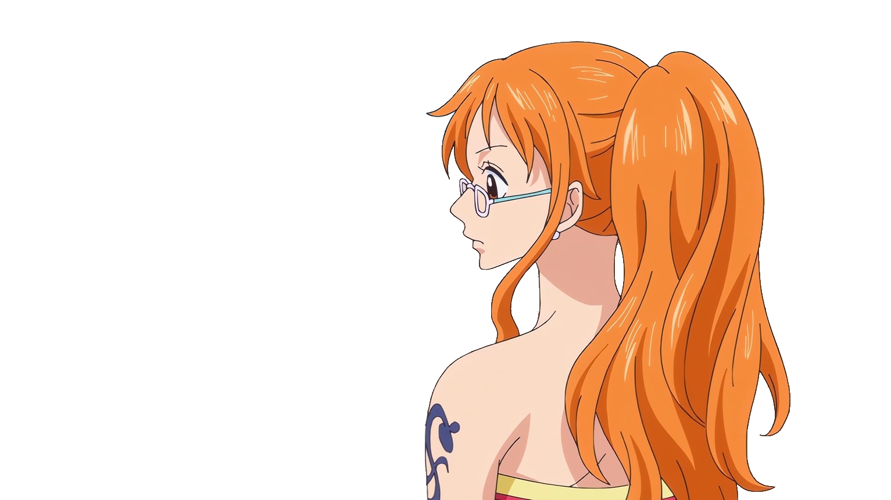
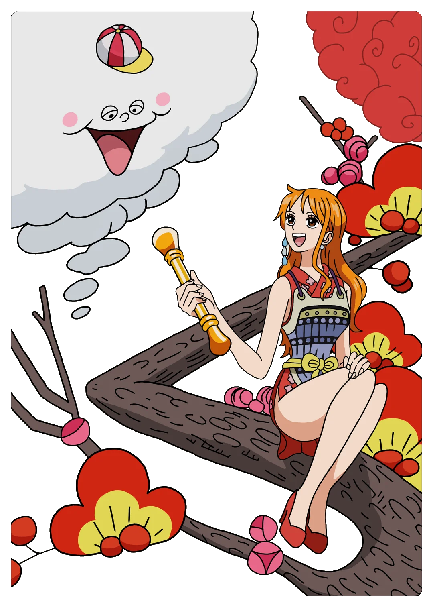

NAMI'S ROUTE
Six islands. One voyage. The skills that got me this far — charted the way she'd chart them.
▾ scroll to set sail — sound is optional, bottom left ▾Log Entry 1 — Leaving East Blue behind. The needle won't settle — it's pulling toward something structural.
 Luffy
Luffy
 Sanji
Sanji
Networking Island
Every port needs a way in. Here I chart how machines find each other — from the physical cable to the packet's final hop.
- OSI Model
- Subnetting
- DNS
- VLANs
- IPv6
- WPA3
- Troubleshooting Methodology
- CompTIA Network+ (N10-009)
Log Entry 2 — A familiar trade route. Well-worn, but never truly finished.
 Zoro
Zoro
 Chopper
Chopper
Windows Island
The busiest port on the route — familiar waters, well-charted, and still where most calls for help wash ashore.
- Windows 11 Pro
- System Support
- Troubleshooting
- Software Administration
Log Entry 3 — Following a current the old charts don't show. Drawing my own line here.
 Robin
Robin
 Franky
Franky
Linux Island
A different shore, running alongside the first. I keep a dual-boot rig so I'm never stranded on one coastline.
- Bazzite (Linux)
- Dual-Boot Systems
- Command Line
- Package Management
Log Entry 4 — Storm warning on the horizon. This is where the hull gets tested.

 Brook
Brook
Cybersecurity Island
Storm season. What's charted here is the hull plating — earned one badge, one exam, at a time.
- CompTIA A+
- CompTIA Network+
- CompTIA CIOS
- Fortinet NSE
- Fortinet Certified Associate
- Acronis Cloud Security (EDR / XDR / MDR)
Log Entry 5 — Something's moving out there that isn't wind or tide.
 Usopp
Usopp
 Jinbei
Jinbei
Automation Island
An island that seems to move on its own. I've been teaching local agents to run the errands I used to do by hand.
- Local AI Agents
- API Integration
- Self-Hosted Tooling
- Google AI Studio (Gemini)
Log Entry 6 — Land that isn't on any chart yet. Full sail.
Game Development Island
No maps exist for this one yet. It's the reason I keep sailing — building worlds instead of just fixing them.
- Unreal Engine 5
- Level Design
- Real-Time Graphics
- Interactive Systems

X Marks the SpotTREASURE LOCATED
That's the route so far — six islands, one still-unfinished map. The voyage keeps going in the other logs.